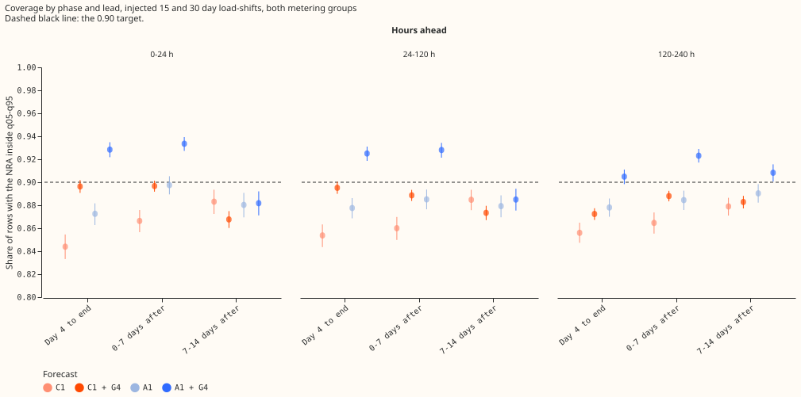
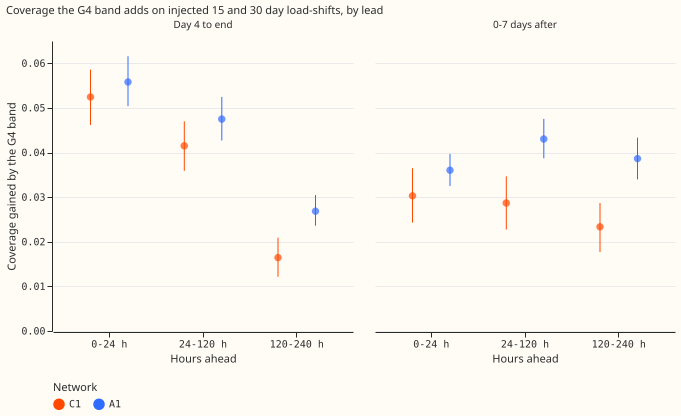
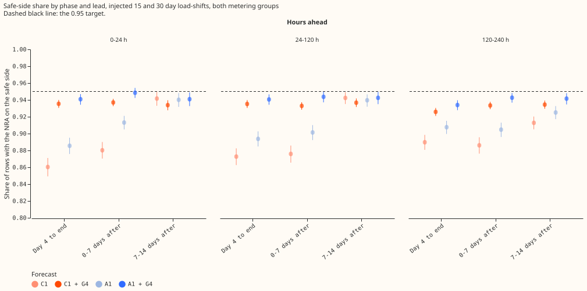
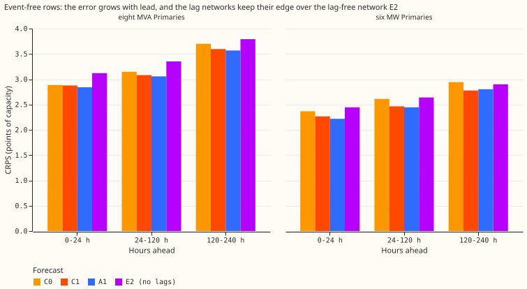
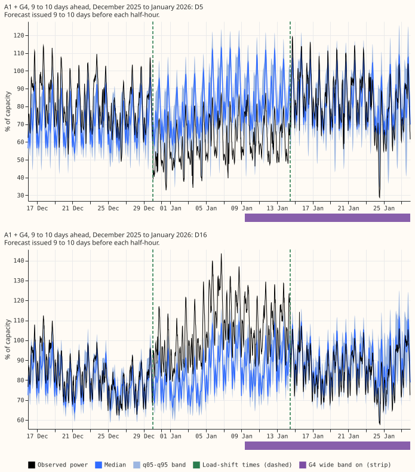
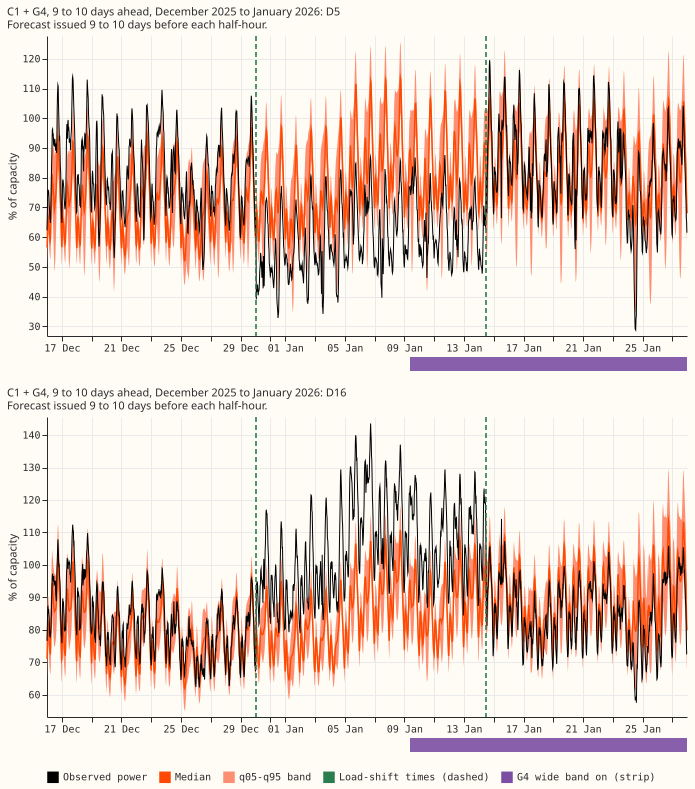

Do C1, A1, and their G4 assembled forecasts still hold the normal running arrangement inside the q05-q95 band at 120-240 h ahead, where NGED's horizon reaches 10 days?
At 5 to 10 days ahead, the G4 band still lifts the share of rows with the normal running arrangement (NRA) inside the 5th-to-95th-percentile (q05-q95) band to 0.905 for the A1 neural network and 0.891 for the C1 neural network, from day 4 of an injected load-shift to its end. The G4 band adds less coverage than at 1 to 5 days ahead, and the 0.90 target is not shown for A1. We re-scored the four stored forecasts C1, A1, and their versions with the G4 band, where experiment 597 had stopped at 5 days. Verdict: partly supported. The pre-registered predictions were: P1 (coverage at least 0.90 from day 4 to the end at 120-240 h) held on the point estimate for A1 and failed for C1; P2 (the gate's gain is not smaller at long lead) was refuted; P3 (G4 costs no event-free pinball loss) held on the point estimates; P4 (the 24-120 h numbers reproduce experiment 597) held.
A load-shift moves part of one Primary substation's demand onto a neighbour for days or weeks, so recent power readings stop showing the NRA. NGED's horizon is 1 to 10 days, and earlier results covered only the first 5 days. All stored forecasts already reached 10 days (240 h), so we changed one constant in experiment 597's scoring code and scored again with no fit. Coverage means the share of rows with the NRA inside the q05-q95 band (target 0.90). The NRA is the way the electricity network is normally arranged to supply a Primary. C1 and A1 are neural networks that read lagged power; the G4 band widens the q05-q95 band while a load-shift is detected; E2 is a neural network that reads no lagged power. The injected events are the shifts of experiment 581's bank, added to the lag inputs only. Nothing is adopted for production.
Terms used below. A Primary-event is one injected load-shift at one Primary substation; 732 of them have a day 4. The phases are by the time being forecast: before the load-shift, days 0 to 3, day 4 to the end, 0 to 7 days after the end, and 7 to 14 days after. The safe-side share is the share of rows with the NRA on the safe side of the band: below q95 when the shift lowered the load, above q05 when it raised it. The median follow ratio is the fraction of the injected shift that the median forecast moves. Metering groups: the eight MVA Primaries and the six MW Primaries. The minimum detectable effect (MDE) is the half-width of an interval widened for the eight counted tests (Bonferroni). CRPS is the continuous ranked probability score. "Points of capacity" are percentage points of a Primary's capacity.
Figures

Share of rows with the NRA inside q05-q95 on injected 15 and 30 day load-shifts, by phase of the
event and by lead band, both metering groups. Dot: mean over Primary-events; line: 95% interval from
resampling events; dashed line: the 0.90 target. The orange and blue dots with G4 lie above their
plain versions in the two phases where the gate is on. The 120-240 h panel sits lower than the other
two for the day-4-to-end phase. Phases before the shift and days 0 to 3 are not drawn, because only
3 and 7 day events have rows there. Panels for each metering group are in
coverage_by_phase_and_lead_mva.svg and coverage_by_phase_and_lead_mw.svg.

Coverage that the G4 band adds to each network (G4 minus plain), by lead band. Dot: mean over Primary-events; line: 95% interval. The gain at 120-240 h is smaller than at 24-120 h in both phases and for both networks; the A1 drop after the end is small (0.004).

Share of rows with the NRA on the safe side of q05 or q95 (below q95 when the shift lowered the load, above q05 when it raised it). Dashed line: the 0.95 target. Look for the G4 dots above the plain dots, and for the 120-240 h panel sitting lower than the other two.

Continuous ranked probability score (CRPS, lower is better) on event-free rows, by lead and metering group, for the plain networks C0, C1, A1 and the lag-free network E2. Look for C0 and E2 above C1 and A1 at every lead, and for every bar rising with lead. C0 is the earlier candidate of experiment 572; E2 reads no lagged power. The G4 band changes the CRPS by less than 0.01 and is not drawn separately.

The forecast of A1 + G4 issued 9 to 10 days before each half-hour, for the two Primaries of the maintainer's example load-shift (D5 and D16), from 14 days before the first switch time to 14 days after the last. Dashed green lines (legend: "Load-shift times"): the start and end times "2025-12-30 01:00" and "2026-01-14 11:30" from the maintainer's log. The observed power steps down at D5 and up at D16 on 2025-12-30 and steps back on 2026-01-14, so the logged times match the step. Experiment 580's verified span starts about one day earlier, and the phase scores below use that span. Purple bar: the half-hours whose forecast was issued while the G4 wide band was on; it runs to the axis end because the band stays wide for 7 days after the gate releases. The bar is placed by the half-hour being forecast, so it starts about 9 days after the gate fired. Coverage is scored against an estimate of the NRA, which is not drawn.

The same figure for C1 + G4. Look for the same purple bar: the G4 wide band starts at the same days for both neural networks.
Results
- Row set and recipe.
experiment_470_intersection_v1: five fold months (2025-10, 2025-12, 2026-01, 2026-03, 2026-06), 16 Primaries, July 2026 unused, cleaned data, D15 and D18 cut before 2025-03-01 (report-only; the injected bank has no events at D15 and D18). Coarse refits on days 0 and 14 of each month, so a contrast could differ at another cadence. Seeds 0 and 1 averaged. Weather from the run issued at or before the forecast origin minus 9 hours. No fit and no GPU. Code reused from experiments 582, 583, 584, 592, and 597 (thee00600_common.pyfile raisesMAX_LEAD_Hfrom 120 to 240). Stored forecasts: C1 (584), A1 (591), C0 (572), E2 (565). - Reproduction (P4). The rebuilt G4 state equals experiment 592's for C0, C1, and A1. At 24-120 h, day 4 to end, C1 + G4 is 0.9132 and A1 + G4 is 0.9251, the same as experiment 597, and the event-free CRPS values of experiment 597 reproduce.
- P1: coverage from day 4 to the end at 120-240 h (732 Primary-events). C1 + G4 0.891 (95% 0.884 to 0.898; Bonferroni 0.881 to 0.901; minimum detectable effect, MDE, 0.010): does not hold. A1 + G4 0.905 (95% 0.898 to 0.911; Bonferroni 0.896 to 0.914; MDE 0.009): holds on the point estimate only, and the lower bound is below 0.90, so under the pre-registered wording the target is "not shown". Plain neural networks: C1 0.856 and A1 0.878. By metering group, A1 + G4 is 0.910 at the eight MVA Primaries and 0.897 at the six MW Primaries; C1 + G4 is 0.893 and 0.889.
- P2: the gate's value at 120-240 h against 24-120 h (coverage of G4 minus plain). A1, 0-7 days after the end: +0.043 then +0.039, difference -0.004 (Bonferroni -0.008 to -0.001; MDE 0.003), so P2 is refuted by the rule, by a small amount. A1, day 4 to end: +0.048 then +0.027, difference -0.021 (-0.025 to -0.018). C1, 0-7 days after: +0.063 then +0.051, difference -0.012 (-0.017 to -0.008; MDE 0.004). C1, day 4 to end: +0.061 then +0.035, difference -0.025 (-0.030 to -0.021).
- Why the gain falls (post hoc, descriptive). The G4 band is decided at the forecast origin. The share of day-4-to-end rows issued while the wide band was on is 0.829 at 0-24 h, 0.762 at 24-120 h, and 0.685 at 120-240 h, for both networks. That accounts for about a quarter of the fall from day 4 to the end (a gain proportional to the share would fall from 0.048 to 0.043 for A1, not to 0.027), so most of the fall is unexplained. After the end the share is the same (0.885 and 0.878), yet C1 still loses 0.012, so the share is not the whole reason.
- Safe-side share and median follow, day 4 to the end, 120-240 h, then at 24-120 h. A1 + G4 0.934 (0.941), C1 + G4 0.925 (0.932). Median follow ratio: C1 0.079 (0.106) and A1 0.080 (0.110); the median is the network's own, so G4 cannot change it.
- Tail pinball, day 4 to end, injected events, points of capacity, 120-240 h (24-120 h in brackets). q01, q05, q95, q99 for C1 + G4: 0.18, 0.72, 0.91, 0.24 (0.18, 0.69, 0.81, 0.21); for A1 + G4: 0.19, 0.73, 0.90, 0.24 (0.18, 0.71, 0.82, 0.22). The plain neural networks are 0.02 to 0.06 higher at q05 and q95 at 120-240 h.
- Event-free rows (CRPS, points of capacity; coverage). The eight MVA Primaries, 24-120 h then 120-240 h: C1 3.081 then 3.595; A1 3.057 then 3.568; C0 3.146 then 3.700; E2 3.352 then 3.791 (C1 rows). The six MW Primaries: C1 2.465 then 2.777; A1 2.445 then 2.803; C0 2.611 then 2.943; E2 2.640 then 2.899. Coverage at 120-240 h is 0.855 to 0.857 at the eight MVA Primaries and 0.874 to 0.877 at the six MW Primaries for C1 and A1, below 0.90 for the plain neural network and for G4. At 24-120 h it is already 0.88 at both metering groups.
- P3: event-free pinball loss, assembled minus plain, both groups, 120-240 h (Bonferroni intervals, points of capacity). C1: q05 -0.0003 (-0.0012 to +0.0002; MDE 0.0007), q95 +0.0001 (-0.0004 to +0.0008; MDE 0.0006). A1: q05 -0.0004 (-0.0018 to +0.0003; MDE 0.0011), q95 +0.0004 (0.0000 to +0.0014; MDE 0.0007). Every point estimate is within its MDE, so P3 holds on the point estimates. The pre-registered rule asked for the whole interval to lie within the MDE, which cannot happen when the MDE is the interval half-width, so this is a deviation from the rule. The A1 q95 lower bound is 0.0000, so G4 may cost a little there.
- Counted tests: 8 (P1 for two forecasts, P2 for two networks, four event-free pinball contrasts), each at the two-sided 5% level divided by 8, with the half-width printed as the MDE.
- Real December pair (D5 and D16, 2 Primary-events, descriptive only), 120-240 h, coverage on experiment 592's verified span. A1 + G4 at D5: before 0.57, days 0-3 0.54, day 4 to end 0.83, 0-7 days after 0.77. D16: 0.94, 0.78, 0.55, 0.84. C1 + G4 at D5: 0.40, 0.45, 0.79, 0.77. D16: 0.97, 0.72, 0.55, 0.83. The D16 miss from day 4 to the end sits on the safe side (0.99 of rows have the NRA on the safe side); at 24-120 h experiment 597 found 0.69 and 0.70.
Checks
- Median minus mean forecast. The stored forecasts hold quantiles only, so the mean forecast does not exist. G4 leaves the median unchanged, so the error of the median forecast is the same with and without the G4 band; no contrast can differ in sign from the quantile-score contrast.
- Leave one Primary out. P1 and P2 keep their sign and verdict when any one of the 14 injected-bank Primaries is removed: C1 + G4 coverage 0.889 to 0.897, A1 + G4 0.902 to 0.910; the A1 and C1 gate-value difference after the end stays between -0.003 and -0.014.
- Audit triggers. Trigger 2 fired in form: P1 for C1 and P2 contradicted the prediction. A post hoc description of one possible cause is recorded above (the gate is decided at issue time); it was not tested as a counterfactual and explains only part of the fall. No other trigger fired, so no audit ran.
- Unlogged-event caveat. NGED may have missed load-shifts in its logs, so event-free rows may hold unlabelled events and the real-pair slices undercount. The real pair is two Primary-events and cannot rank forecasts.
- Lab shortcut. The injected bank changes only the lag inputs, not the training power, so it flatters networks that read lags (experiment 595).
- What to try next. A band that widens at issue time for rows valid inside a suspected load-shift when the gate has not fired, and a separate long-lead calibration step for event-free rows (0.855 to 0.877 coverage).